REASON 01
対話から始める個別設計
定型文に当てはめず、経験と関心から指導を組み立てます。
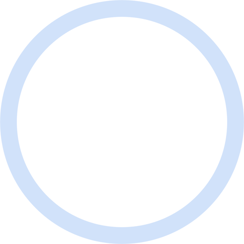
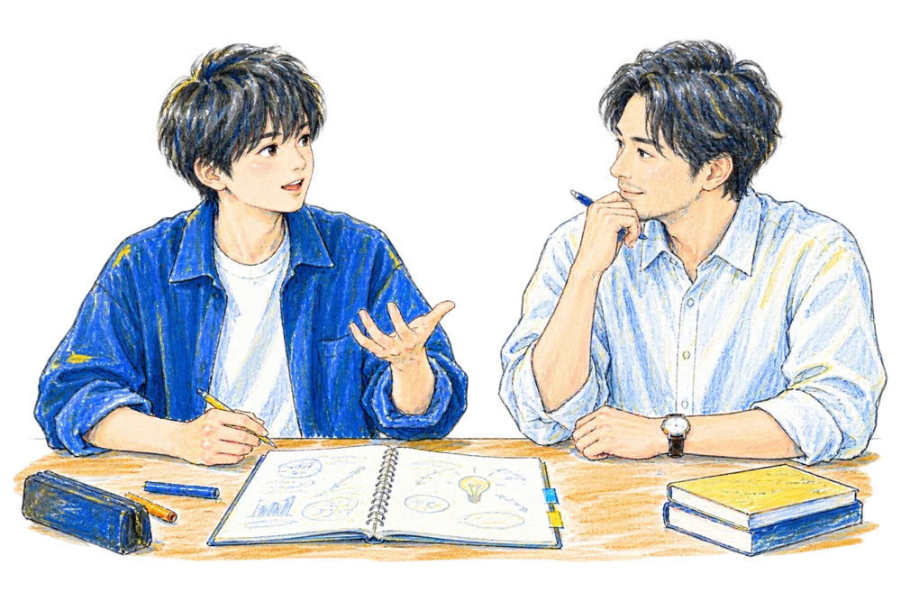
総合型選抜専門オンライン塾
実績の大きさではなく、そこから何を考え、
何を学びたいと思ったか。経験を問いへ変え、
大学で深める学びにつなげます。
LINEで無料受験相談志望校未定でも、実績に自信がなくても相談できます。
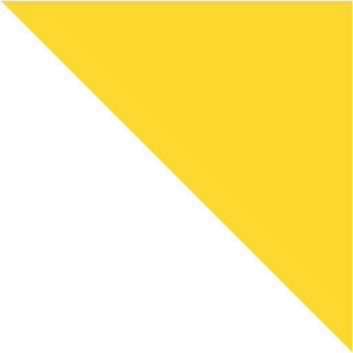
RESULTS
合格件数：2022〜2026年の実績
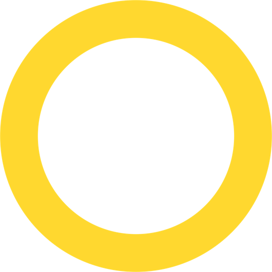
YOUR CONCERNS
WHY
経験から生まれた関心と、大学で深めたい学び。その間にある一本の線が、まだ整理されていないだけかもしれません。
LIGHTHOUSEは完成した文章を直すのではなく、本人の経験を振り返るところから始めます。
OUR POLICY
問いを立て、調べ、考え、選んだ理由を自分の言葉で。
その力を育てます。
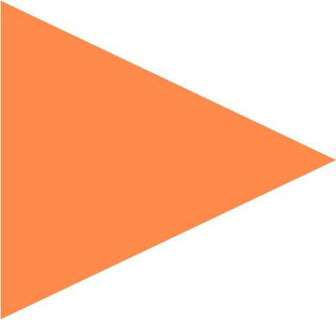
CONNECTION
特別な実績をつくるのではなく、
すでにある経験の意味を掘り下げます。
過去の生徒の探究テーマをもとにした接続の例です。
PROCESS
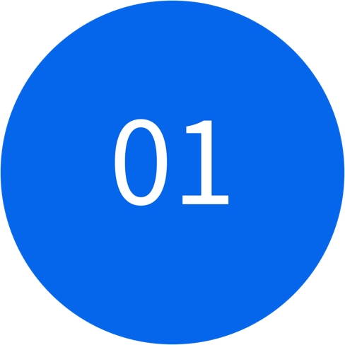
出来事、選択、感情を対話によって整理します。
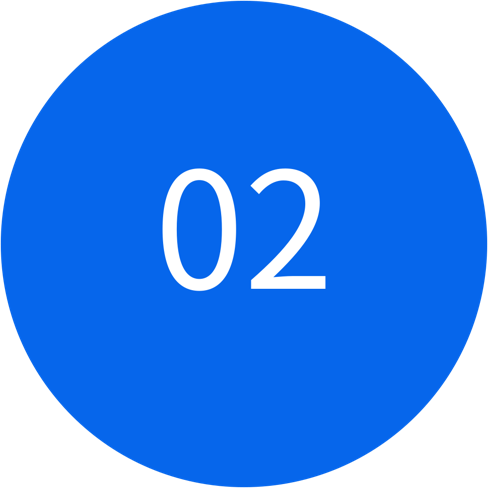
経験の中の違和感を、大学で深める問いへ変えます。
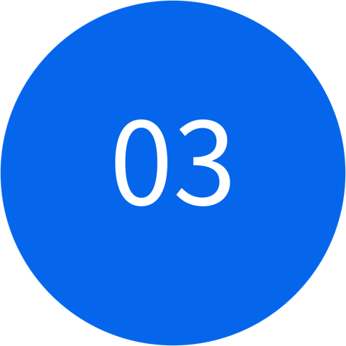
大学、研究室、先行研究、社会課題まで調べます。
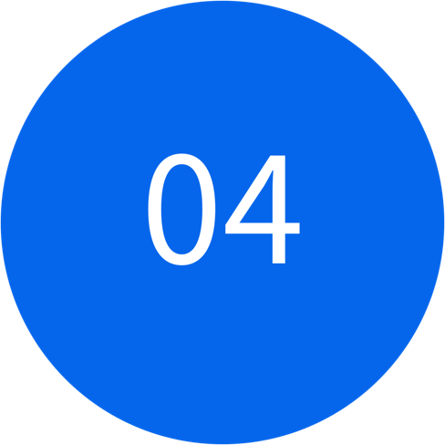
志望理由書、小論文、面接を同じ軸でつなげます。
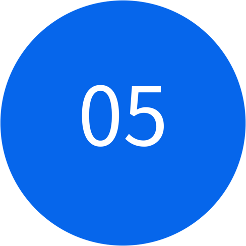
調査、探究、制作、発信など合格後にも続く行動へ。
WHY LIGHTHOUSE
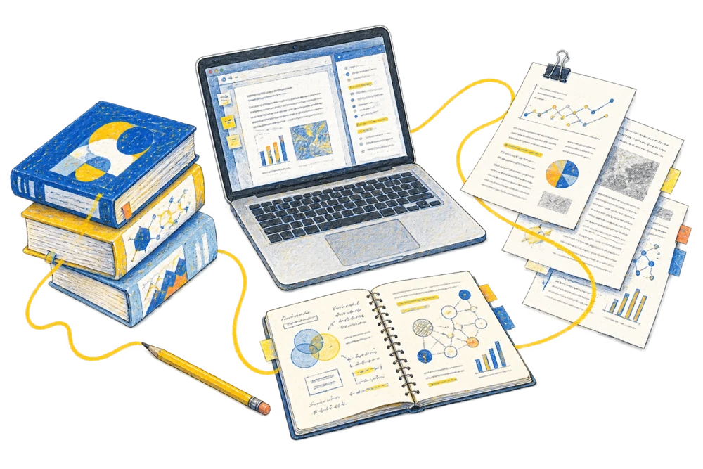
REASON 01
定型文に当てはめず、経験と関心から指導を組み立てます。
REASON 02
書類、小論文、面接、任意資料を同じ進路の軸でつなぎます。
REASON 03
自己分析で終わらず、大学の研究と社会課題まで調査します。
REASON 04
問いを立て、調べ、考え、伝える力を大学での学びへ。
STORIES
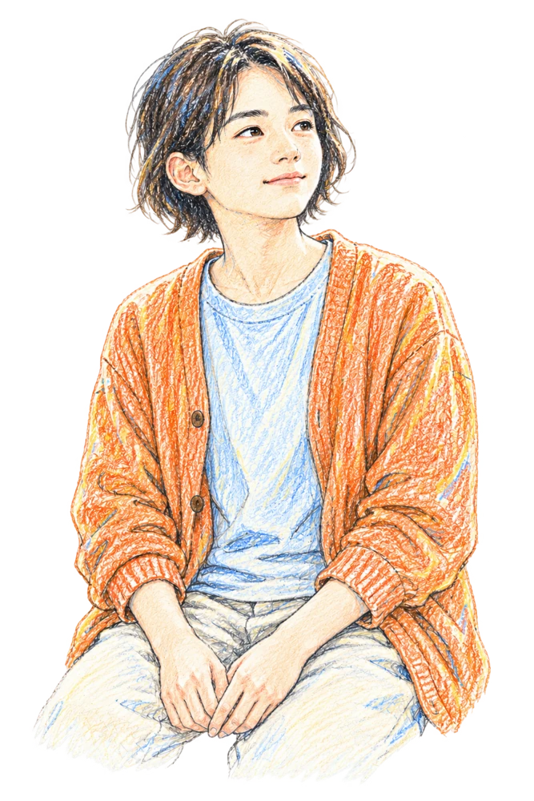
CASE 01
「合格した時より、8万字書ききったことの方が誇らしかった。」詳しく読む →
CASE 02
「結局、父の仕事を丸ごと書いたことで、面接官の目が変わった。」詳しく読む →
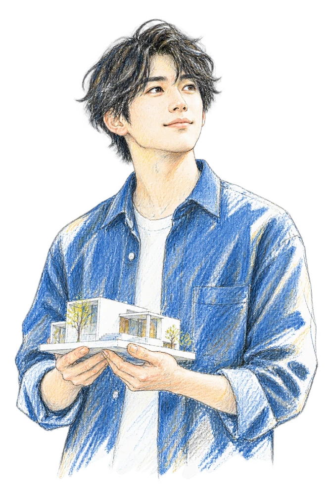
CASE 03
「ラグビーで得た学びも挫折も、受験で取り組んだ自己探究も、全部繋がっているんですね。」詳しく読む →
人物画像はイメージイラストです。体験談は代表ストーリーより抜粋。
MENTOR
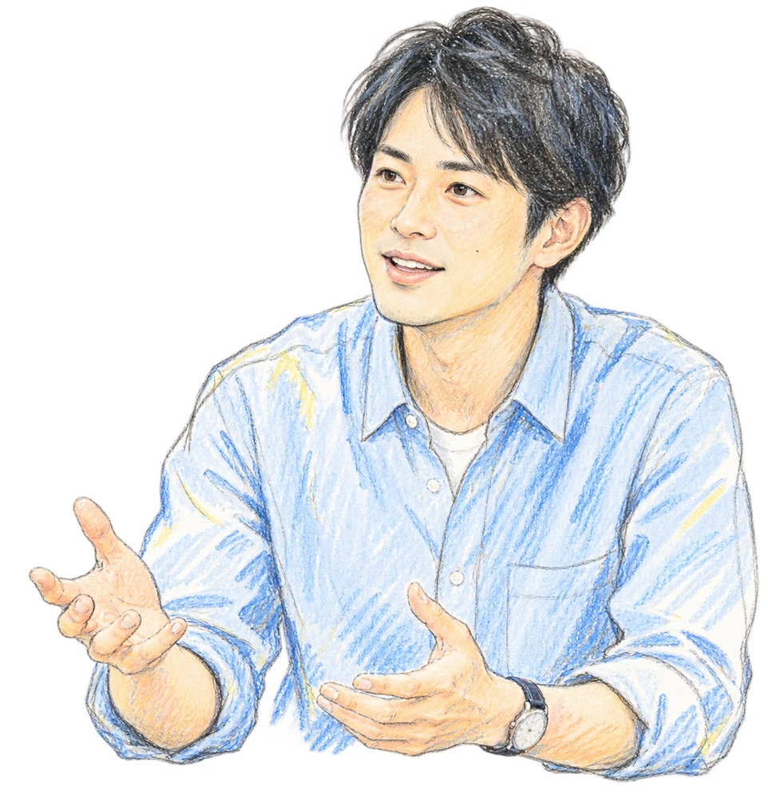
「答え」を
教えるのではなく、
一緒に問いを
深めていく。
一人ひとりの経験や価値観を大切にし、
「何を学びたいか」を一緒に掘り下げます。
FREE CONSULTATION
入塾を決める場ではなく、
現在地と次の一歩を整理します。
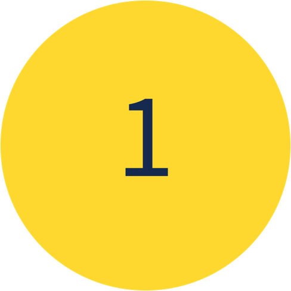
現在地と、書けない理由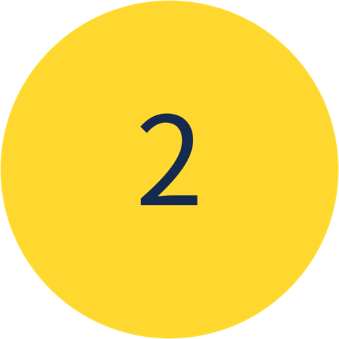
最初に取り組むべき課題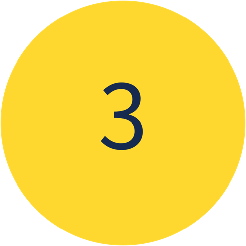
出願までのおおまかな進め方START FROM HERE
入塾前提ではありません。
志望校が決まっていない段階でも相談できます。
総合型選抜専門オンライン塾 LIGHTHOUSE
FIND YOUR NEXT STEP
相談前の整理に使える、無料のワークブックと診断です。
Quest Noteを受け取る経験や関心を整理する無料ワークブック合格可能性診断5分で現在地と対策の準備度を確認進路発見チャート学習スタイル診断サービス・料金を見るFAQ
はい。ただし「実績がないから何もしなくていい」わけではありません。問われるのは実績の大きさではなく、何かにのめり込み、壁にぶつかった経験と、そこから生まれた問いです。まだ無ければ、これから一緒に作ります。実績を盛るのではなく、あなたの経験を学問へつながる問いへと鍛えます。
可能です。実際に一般対策と並行しながら合格した事例が多数あります。英語・現代文・生物など教科面の伴走も行っています。
Quest Noteに一度取り組んでいただくのがおすすめです。現状の整理が進んだ状態で相談すると、初回面談の密度が大きく変わります。
はい。偏差値36からの慶應SFC合格など、出発点の学力は問いません。総合型選抜は現在の学力だけで決まるものではありません。